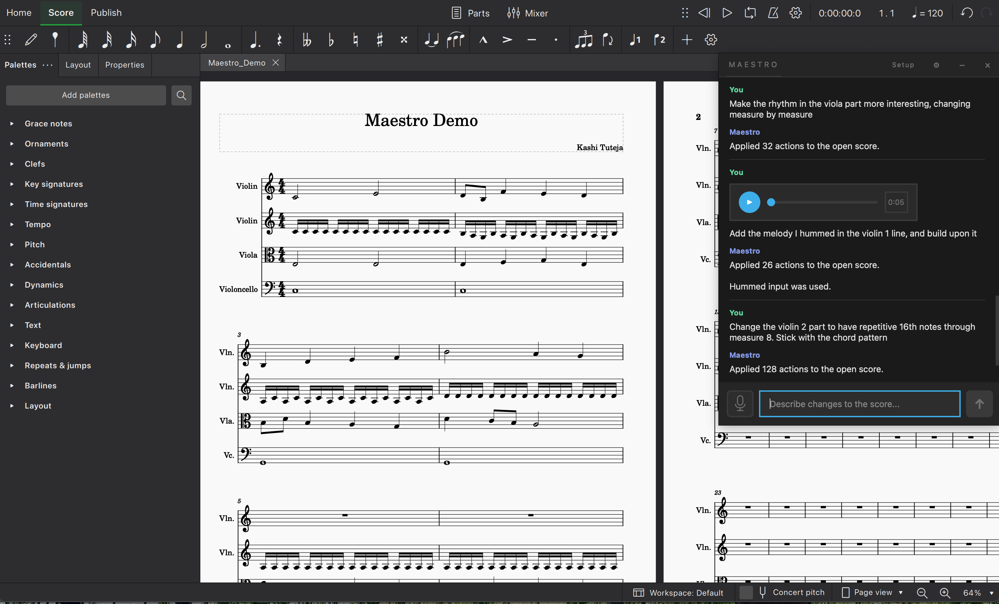

Maestro v0.1.1
The first-ever AI composition assistant.
How to get started
-
1
Download the macOS app above, or use the manual CLI setup below for source-based macOS, Windows, or Linux.
-
2
Have either an OpenAI API key or an Ollama account/setup ready before you start generating edits.
-
3
Launch Maestro and install
Maestro Pluginwhen the app prompts you. -
4
In MuseScore, enable the plugin and run
Plugins > Maestro > Maestro Plugin. -
5
Keep the plugin window open, choose your provider in Maestro, and start prompting or humming changes into the score.
-
6
The macOS app remembers non-secret settings locally, stores an OpenAI API key in Keychain when you save one, and includes a
Diagaction for copyable beta diagnostics.
The macOS beta is unsigned and not notarized. On first launch, right-click
Maestro.app, choose Open, and use
System Settings > Privacy & Security > Open Anyway if macOS blocks it again.
manual setup / windows / linux / source macos
# macOS / Linux
$ git clone https://github.com/TidalTunes/Maestro.git
$ cd Maestro
$ python3 -m venv .venv
$ source .venv/bin/activate
$ python -m pip install --upgrade pip
$ python -m pip install -r requirements-desktop.txt
$ # have either an OpenAI API key or an Ollama account/setup ready
$ maestro-install-plugin install
$ maestro-install-plugin status
$ export OPENAI_API_KEY="your-key-here" # or prepare Ollama instead
$ python maestro_gui.pyPlugin: Enable Maestro Plugin in MuseScore, then run Plugins > Maestro > Maestro Plugin.
Provider: You currently need either an OpenAI API key or an Ollama account/setup.
Windows: Use py -3 -m venv .venv, .venv\Scripts\Activate.ps1, and $env:OPENAI_API_KEY="...".
Full guide: README.md
live in musescore
